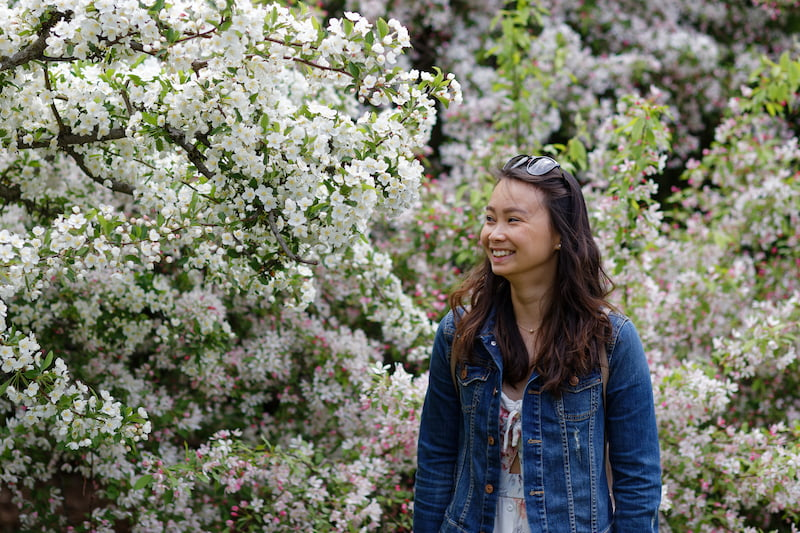
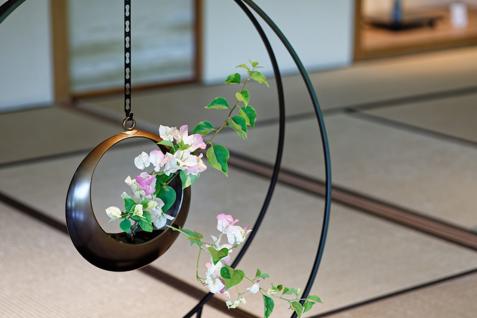

Qui suis-je ?
Mon parcours a fait quelques détours avant de m’amener à la massothérapie.
J’ai eu la chance de pouvoir travailler dans le tourisme pendant plusieurs années. La joie que m’apportait le contact avec les gens se confirmait mais dans mon grand fort intérieur, j’ai toujours souhaité apporter plus qu’un sourire, plus qu’un unique service à la clientèle.
Une très grande remise en question s’est imposée et la massothérapie m’a paru évidente. Être à l’écoute et aider les gens a toujours été ancré en moi.
La massothérapie apporte une nouvelle dimension à mes capacités: je peux vous entendre avec mes mains.

Mes formations
Praticienne en massothérapie (Académie de Massage Scientifique de Montréal, 424 heures - diplômée en 2021)
- Massage Suédois de détente
- Massage Suédois de détente spécifique
- Massage Suédois Intramusculaire
Massothérapie Avancée (Académie de Massage Scientifique de Montréal, en cours d’obtention)
Je choisis de continuer en massothérapie avancée car j’ai toujours été entourée de personnes ayant des maux de «vie» que ce soit dû au travail, au stress, aux problèmes personnels. Je décide de pousser ma formation dans l’optique d’apporter une approche thérapeutique afin de vous rendre la vie plus agréable !

Certification professionnelle
Membre du Réseau des massothérapeutes professionnels du Québec (RMPQ)